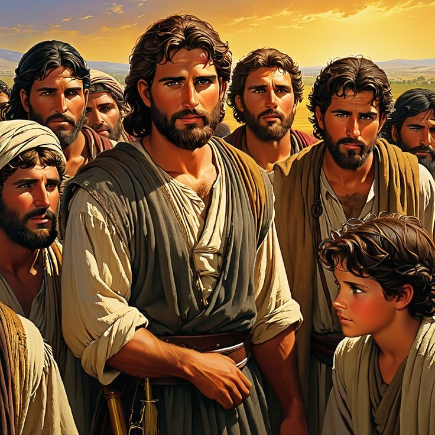
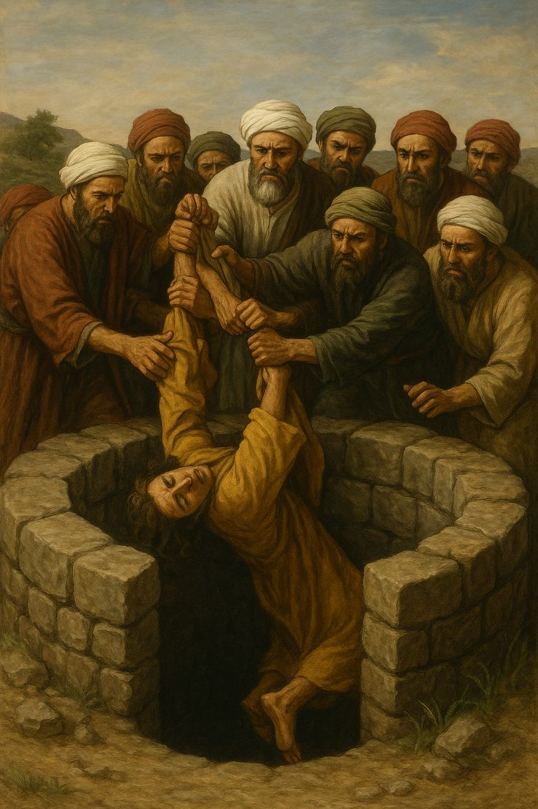
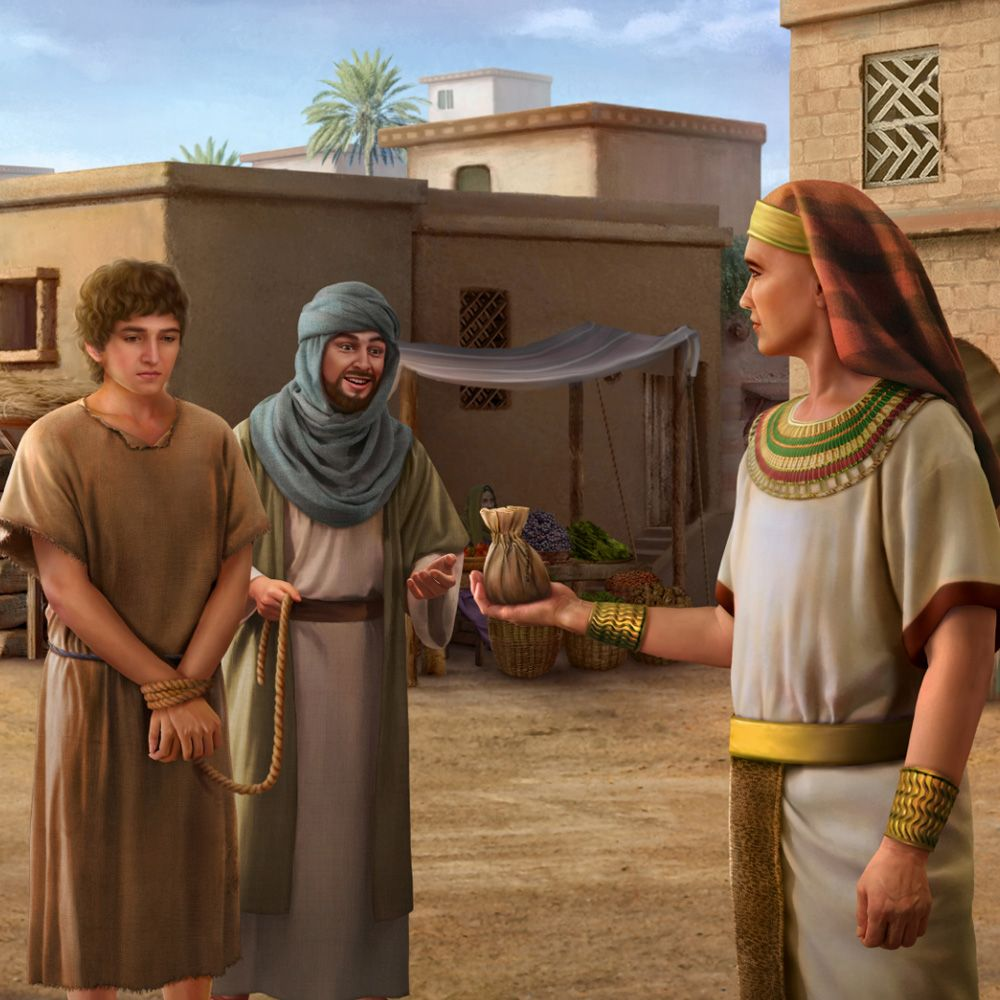
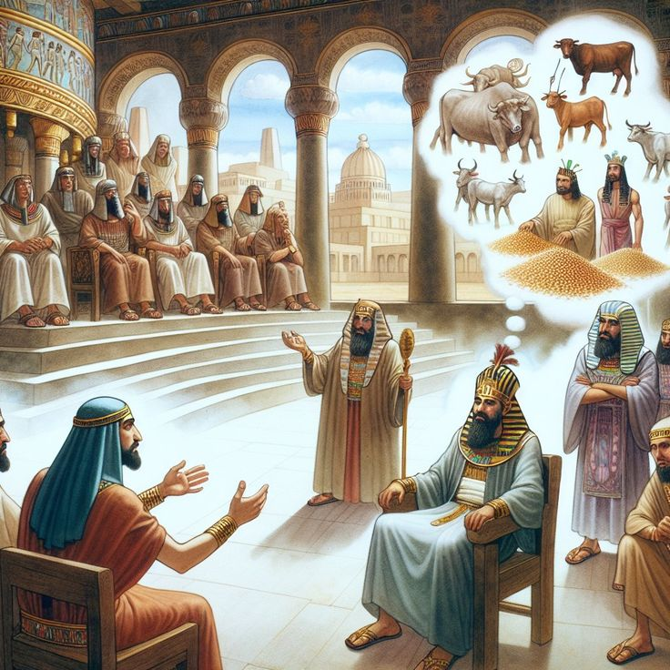
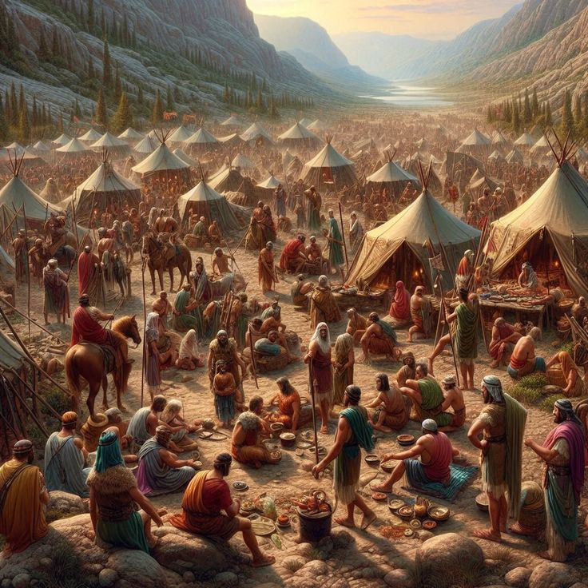
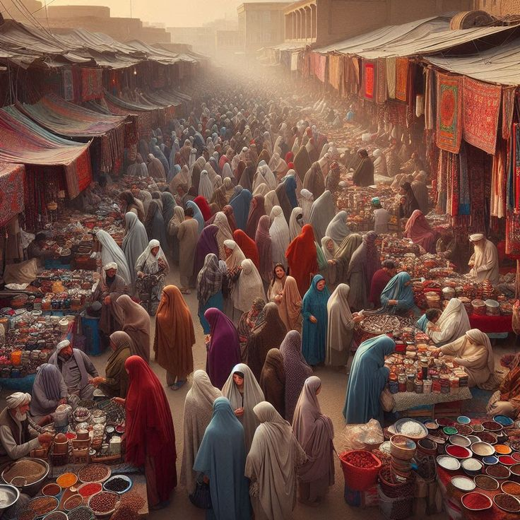

The Dreamer and the Redeemer
“Lord, help me to trust Your plan like Joseph — to believe that even in betrayal, pain, or loneliness, You are still working for my good. Give me the faith to hold on to my dreams, even when the world calls them impossible, for You are the God who turns prisons into palaces and tears into triumphs."
Jacob and Joseph

Jacob’s Family
யாக்கோபின் குடும்பம்
Jacob was the son of Isaac and the grandson of Abraham. He had twelve sons, and from them came the Twelve Tribes of Israel. 🇮🇱 Among his sons was Joseph — a wise and kind young boy who trusted in God and had a pure heart.
யாக்கோபு, இசாகின் மகன் மற்றும் ஆபிரகாமின் பேரன். அவருக்கு பன்னிரண்டு (12) மகன்கள் பிறந்தனர். இவர்களாலே இஸ்ரவேல் 12 குலங்கள் (Tribes of Israel) உருவானன. 🇮🇱 யாக்கோபின் மக்களில் ஒருவன் யோசேப் (Joseph) — மிகவும் புத்திசாலி, கனவுகள் காணும் சிறுவன். அவன் சிறுவயதிலேயே தேவனை நம்பியவன்; நல்ல இதயமுடையவன்.
Joseph’s Dreams
யோசேப்பின் கனவுகள்
One night, Joseph had two special dreams: In the first dream — he and his brothers were tying bundles of grain in the field. Joseph’s bundle stood upright, while the others bowed down to his. In the second dream — the sun, moon, and eleven stars bowed before him. When Joseph told his brothers, they became jealous and angry. They said, “Will you really rule over us?”
ஒருநாள் யோசேப் இரண்டு விசித்திரமான கனவுகள் கண்டான்: முதலாவது — தானும் தன் சகோதரர்களும் வயலில் தானியக் குத்துகள் கட்டும் போது, அவனுடைய குத்து நேராக நின்றது; மற்ற சகோதரர்களின் குத்துகள் அவனுக்குப் பணிந்தன. இரண்டாவது — சூரியன், நிலா, பதினொன்று நட்சத்திரங்கள் அவனுக்குப் பணிந்தன. இந்த கனவுகளைச் சொல்லியபோது, சகோதரர்கள் பொறாமைப்பட்டார்கள். “அவன் எங்களை ஆட்சி செய்வானா?” என்று அவர்கள் மனதில் கோபமடைந்தனர்.

The Brothers’ Jealousy and Betrayal
சகோதரர்களின் பொறாமை மற்றும் விற்பனை
One day, Joseph went to visit his brothers in the field. When they saw him coming, they plotted against him. “Let’s get rid of him once and for all!” they said. They threw him into a deep pit, and later sold him to Ishmaelite traders for twenty pieces of silver. Then they dipped Joseph’s colorful robe in goat’s blood and took it to their father Jacob. Jacob wept bitterly, thinking, “My son Joseph has been killed by a wild animal!”
ஒருநாள் யோசேப் தன் சகோதரர்களைச் சந்திக்கச் சென்றான். அவர்கள் அவனைப் பார்த்தவுடனே திட்டமிட்டனர் — “அவனைப் போக்கிவிடுவோம்!” என்று. அவர்கள் அவனை கிணற்றில் தள்ளி, பின்னர் இஷ்மாயேலர் (Ishmaelites) என்னும் வணிகர்களிடம் 20 வெள்ளி நாணயங்களுக்கு விற்றனர். அவர்கள் யோசேப்பின் நிறமுடைய மேலையைக் கொண்டு, அதை ஆட்டின் இரத்தத்தில் நனைத்து, தங்கள் தந்தை யாக்கோபிடம் காட்டினர். யாக்கோபு அதை பார்த்து, “என் மகன் யோசேப் ஒரு மிருகத்தால் கொல்லப்பட்டான்!” என்று அழுதார்.

Joseph’s Life in Egypt
எகிப்தில் யோசேப்பின் வாழ்க்கை
Joseph was sold as a slave to Potiphar, an officer in Egypt. But Joseph worked faithfully, and God blessed everything he did. However, Potiphar’s wife falsely accused him, and Joseph was thrown into prison. Even there, God was with him. Joseph helped others by interpreting their dreams, and soon his gift became known to Pharaoh, the king of Egypt.
யோசேப் எகிப்தில் பொத்திபார் (Potiphar) எனும் அதிகாரியிடம் அடிமையாக விற்கப்பட்டான். அவன் உண்மையுடன், நம்பிக்கையுடன் பணியாற்றினான். தேவன் அவனுடன் இருந்ததால், அவன் எல்லா காரியத்திலும் வெற்றி பெற்றான். ஆனால் பொத்திபாரின் மனைவி பொய்யாக குற்றம் சாட்டியதால், யோசேப் சிறையில் அடைக்கப்பட்டான். அங்கும் தேவன் அவனுடன் இருந்தார். யோசேப் கனவுகளை விளக்கி மக்களுக்கு உதவினான். அந்த செய்தி பரோவனிடம் (Pharaoh) சென்றது.

Pharaoh’s Dreams and Joseph’s Rise to Power
பாரோவனின் கனவு மற்றும் உயர்வு
Pharaoh had two troubling dreams: 1️⃣ Seven healthy cows eaten by seven thin cows. 2️⃣ Seven good heads of grain swallowed by seven dry ones. No one could explain them — but Joseph said: “God has revealed what will happen. There will be seven years of plenty, followed by seven years of famine.” Pharaoh was amazed and made Joseph the second ruler of Egypt! He gave him a royal ring, fine clothes, and a chariot to ride in.
பரோவன் இரண்டு கனவுகள் கண்டான் — 1️⃣ ஏழு பருமனான பசுக்கள் மற்றும் ஏழு மெலிந்த பசுக்கள். 2️⃣ ஏழு நல்ல தானியக் குத்துகள் மற்றும் ஏழு வாடிய குத்துகள். யாரும் அதை விளக்க முடியவில்லை. அப்போது யோசேப் அழைக்கப்பட்டான். அவன் சொன்னான்: “தேவன் உமக்குக் காட்டிய கனவின் அர்த்தம் — ஏழு வருடங்கள் மிகுந்த விளைச்சல் வரும், அதற்குப் பிறகு ஏழு வருடங்கள் கடுமையான பஞ்சம் வரும்.” பரோவன் அதைக் கேட்டதும் மகிழ்ச்சியடைந்து, யோசேப்பை எகிப்தின் இரண்டாம் நிலை ஆட்சியாளராக நியமித்தான்! அவனுக்கு மோதிரமும், பொற்கயிறும், வண்டியும் அளித்தான்.

The Famine and Family Reunion
பஞ்ச காலம் மற்றும் குடும்ப மீட்பு
When the famine came, Joseph had already stored enough grain for the nation. People from many lands came to Egypt for food — including Joseph’s brothers. They bowed before him, not realizing he was their brother! After testing their hearts, Joseph finally revealed himself: “I am Joseph, your brother! You sold me, but God used it for good — to save many lives.” Joseph forgave them and brought his whole family to live safely in Egypt. There they grew and became the great nation of Israel.
பஞ்சம் வந்தபோது, யோசேப் முன்னேற்பாடாக நிறைய தானியத்தை சேமித்திருந்தான். பூமியின் எல்லா இடங்களிலிருந்தும் மக்கள் உணவுக்காக எகிப்துக்கு வந்தனர். யாக்கோபின் மகன்களும் தானியத்திற்காக வந்தார்கள் — அவர்கள் முன் நின்றவர் யோசேப் என்பதை அவர்கள் அறிந்திருக்கவில்லை! யோசேப் அவர்களைச் சோதித்துப் பார்த்து, இறுதியில் தன்னை வெளிப்படுத்தினான்: “நான் உங்களுடைய சகோதரன் யோசேப்! நீங்கள் என்னை விற்றீர்கள், ஆனால் தேவன் இதை நன்மைக்காக செய்தார். அவர் மக்களை காப்பாற்றினார்.” அவன் தனது குடும்பத்தினரை அழைத்து, எகிப்தில் தங்கச் செய்தான். அங்கு அவர்கள் வளர்ந்து பெருகினர் — இது இஸ்ரவேல் ஜாதியின் தொடக்கம்.

God’s Plan and Lessons
தேவனின் திட்டம் மற்றும் பாடங்கள்
God is always with us — even in pain or betrayal. Jealousy destroys, but forgiveness restores. Faith, patience, and trust in God lead to victory. Joseph’s life is a symbol of hope and redemption — just as Jesus came later to save all people.
தேவன் எப்போதும் நம்மோடு இருக்கிறார், நம்முடைய துன்பத்தையும் நன்மையாக மாற்றுவார். பொறாமை அழிக்கிறது, ஆனால் மன்னிப்பு மீட்டெடுக்கிறது. நம்பிக்கை, பொறுமை, விசுவாசம் — இதுவே வெற்றியின் ரகசியம். யோசேப்பின் வாழ்க்கை ஒரு மீட்சியின் சின்னம் — அப்படியே யேசுவும் நம்மை மீட்டார்.
"When life feels uncertain, strengthen my heart with Your promises. Remind me that Your timing is perfect, even when I cannot see the path ahead. Teach me to forgive like Joseph — to let go of bitterness, and to love those who have hurt me, knowing that forgiveness brings peace and healing. Help me to see Your purpose in every season — in waiting, in weeping, and in rejoicing. Let every trial refine my faith, and every blessing remind me of Your grace. May my life be a living testimony that You are faithful, and that Your plans are always greater than my own."